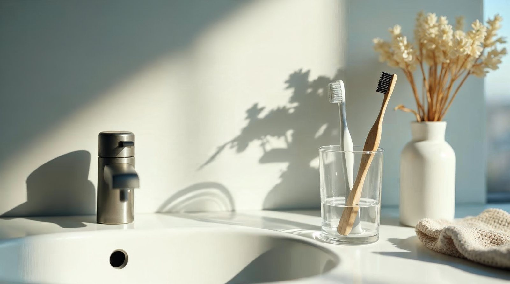
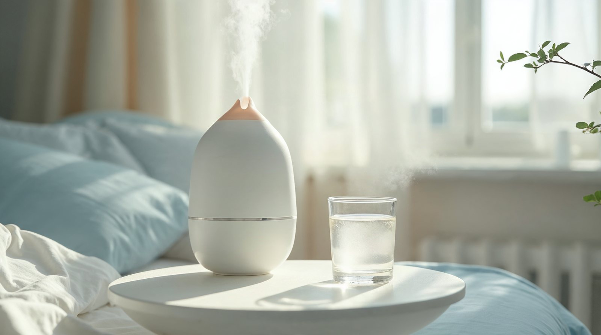
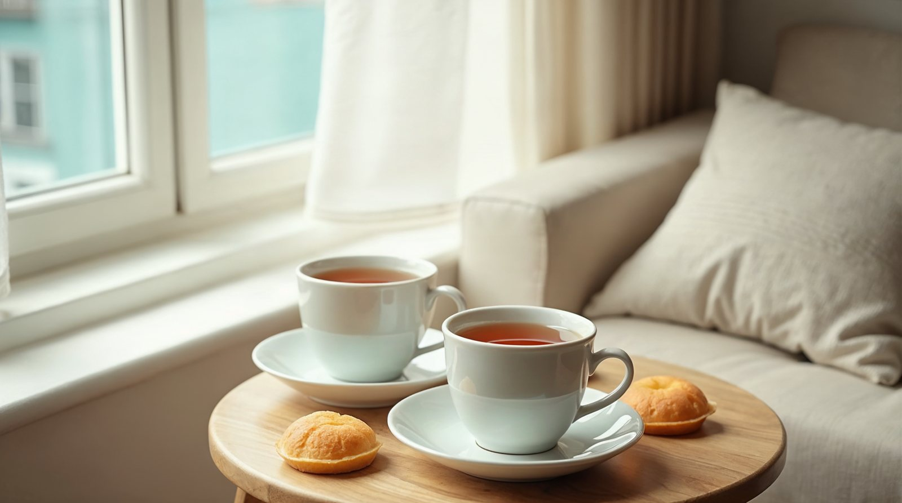
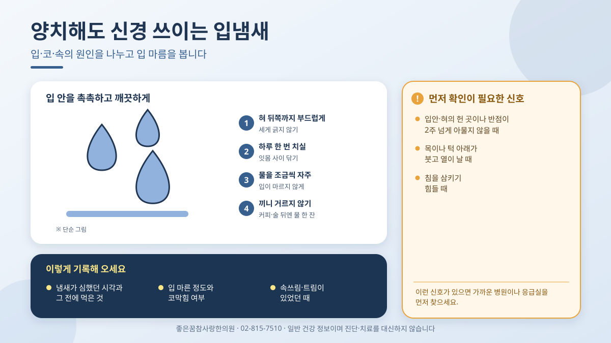

이종호 한의사 감수좋은꿈참사랑한의원 대표원장 (한의사 면허번호 19769)발행 2026-11-26 · 수정 2026-11-26
이 글의 차례
엘리베이터에서 동료가 말을 걸어오면 저도 모르게 손으로 입을 가립니다. 아침에 양치를 꼼꼼히 했는데도, 오후가 되면 혹시 냄새가 나지 않을까 껌을 씹고 가글을 합니다. 가까운 사람이 슬쩍 고개를 돌리는 모습이라도 보면 하루 종일 그 장면이 마음에 남습니다.
입냄새는 생각보다 많은 분이 남몰래 안고 사는 고민입니다. 냄새는 스스로 맡기 어렵다 보니 남의 반응에 더 예민해지고, 그러다 보면 사람을 만나는 일 자체가 부담스러워지기도 합니다. 저는 이 마음의 무게도 증상만큼 크게 봅니다.
진료실에서는 치과에서는 깨끗하다는데 속이 안 좋아서 그런 것 아니냐는 말씀을 자주 듣습니다. 입냄새를 속 탓으로 여기고 오시는 분이 많습니다. 실제로는 입 안의 원인이 가장 흔하다고 알려져 있어, 저는 입부터 차례로 살펴 가자고 말씀드립니다.
이 글에서는 입냄새가 어디서 오는지 갈래를 나눠 보고, 스스로 점검해 볼 것과 생활에서 해 볼 수 있는 것, 한의원에서 함께 살피는 부분을 정리해 보겠습니다. 치과와 이비인후과, 내과의 진료와 어떻게 나란히 갈 수 있는지도 함께 말씀드리겠습니다.
왜 양치를 해도 입냄새가 날까요
입냄새의 대부분은 입 안에서 만들어진다고 알려져 있습니다. 입 안에 사는 세균이 음식 찌꺼기와 떨어져 나온 세포를 분해하면서 황이 섞인 기체를 만들고, 이것이 특유의 냄새를 냅니다. 이 세균이 많이 모이는 곳이 혀 뒤쪽, 잇몸과 치아 사이, 충치나 오래된 보철물 주변입니다.
침은 입 안을 씻어 내고 세균이 늘어나는 것을 막아 줍니다. 그래서 침이 줄어드는 때에는 냄새가 짙어집니다. 자고 일어난 아침, 오래 말을 한 뒤, 끼니를 거른 오후, 긴장한 날에 냄새가 더 심하다고 느끼는 이유입니다.
입 밖에서 오는 냄새도 있습니다. 축농증처럼 코 안쪽에 고름이 고이거나, 콧물이 목 뒤로 넘어가거나, 편도에 작은 알갱이가 끼는 경우에도 냄새가 날 수 있습니다. 위산이 자주 올라오는 분도 신물과 함께 냄새를 느끼기도 합니다.
한의학에서는 입냄새를 구취(口臭)라 하여, 위에 열이 쌓이거나 음식이 제대로 내려가지 못해 정체된 모습과 연결해 보아 왔습니다. 입이 마르고 쓰며 혀에 두꺼운 누런 태가 낀다면 속의 열을, 입이 끈적하고 혀가 부은 듯하면 습(濕)을 함께 살핍니다. 다만 이것은 입 안 원인을 확인한 다음의 이야기입니다.
냄새의 갈래, 이렇게 나눠 봅니다
혀와 잇몸에서 오는 경우
혀 뒤쪽에 하얗거나 누런 막이 두껍게 끼어 있거나, 칫솔질할 때 잇몸에서 피가 난다면 입 안이 가장 먼저 의심됩니다. 치실을 쓴 뒤 냄새를 맡아 보았을 때 냄새가 강하다면 잇몸 사이를 살펴봐야 합니다. 이때는 치과 점검이 출발점입니다.
입 마름에서 오는 경우
입이 자주 마르고 침이 끈적하다면 침이 줄어든 탓일 수 있습니다. 입을 벌리고 자는 습관, 물을 적게 마시는 생활, 카페인과 술, 일부 약, 나이에 따른 변화가 침을 줄입니다. 갱년기 무렵 입 마름이 시작되었다는 분도 많습니다.
코와 목에서 오는 경우
코가 자주 막히고, 누런 콧물이 목 뒤로 넘어가며, 헛기침을 자주 한다면 코와 목을 함께 살핍니다. 목 깊은 곳에서 하얀 알갱이가 나온 적이 있다면 편도 쪽 원인도 생각해 봅니다. 이비인후과 진료가 함께 필요할 수 있습니다.
속과 식사에서 오는 경우
신물이 자주 올라오거나, 트림이 잦고 속이 더부룩하거나, 끼니를 자주 거르는 분이라면 속의 상태를 함께 봅니다. 마늘과 양파, 술, 커피처럼 냄새가 남는 음식, 단백질 위주로 탄수화물을 크게 줄인 식사도 냄새에 영향을 줄 수 있습니다.

내 입냄새, 이렇게 점검해 봅니다
입냄새는 스스로 맡기 어렵습니다. 손바닥에 입김을 불어 맡는 방법은 정확하지 않다고 알려져 있습니다. 아래처럼 해 보시면 조금 더 짐작이 갑니다.
깨끗한 숟가락으로 혀 뒤쪽을 가볍게 긁어 잠시 둔 뒤 냄새를 맡아 보세요. 냄새가 강하다면 혀의 태가 원인일 가능성이 큽니다. 치실을 쓴 뒤 그 치실의 냄새를 맡아 보면 잇몸 사이를 짐작할 수 있습니다.
믿을 수 있는 가족에게 아침, 점심 전, 저녁에 한 번씩 솔직하게 물어보는 것도 방법입니다. 언제 심한지를 알면 원인을 좁히기 쉽습니다. 반대로 주변에서는 냄새를 못 느낀다는데 혼자 계속 걱정된다면, 그 걱정 자체를 함께 다루는 것도 중요합니다.

아침 입냄새와 낮 입냄새는 다릅니다
자고 일어난 직후의 입냄새는 거의 모든 사람에게 있습니다. 자는 동안 침이 줄어 세균이 늘어나기 때문인데, 양치하고 아침을 먹으면 대부분 옅어집니다. 이것만으로 크게 걱정하실 필요는 없습니다.
신경 써서 볼 것은 낮 동안에도 이어지는 냄새입니다. 양치하고 몇 시간 지나지 않았는데도 냄새가 난다는 말을 듣는다면, 혀와 잇몸, 입 마름, 코와 목을 차례로 살펴볼 때입니다. 언제 냄새가 나는지가 원인을 좁히는 가장 좋은 단서입니다.
배가 고플 때 냄새가 짙어지는 분도 있습니다. 끼니를 오래 거르면 침이 줄고, 몸이 지방을 태우며 독특한 냄새를 내기도 합니다. 다이어트로 식사를 크게 줄인 뒤 입냄새가 생겼다면 식사 간격부터 살펴보세요.
나이와 보철물에 따라 달라지는 점
나이가 들면 침이 조금씩 줄고, 드시는 약도 늘어 입 마름이 잦아집니다. 틀니나 임플란트, 오래된 씌운 이가 있다면 그 주변에 음식 찌꺼기가 끼기 쉬워 꼼꼼한 관리가 필요합니다. 틀니는 밤에 빼서 깨끗이 닦아 보관하는 것이 기본입니다.
부모님 입냄새가 부쩍 심해졌다고 걱정하며 함께 오시는 자녀분도 계십니다. 이럴 때는 치과 검진을 한 지 얼마나 되었는지, 새로 드시기 시작한 약은 없는지, 물을 충분히 드시는지부터 같이 확인해 봅니다. 어르신은 목마름을 덜 느끼셔서 물을 적게 드시는 경우가 많습니다.
긴장과 입 마름, 그리고 입냄새
중요한 발표나 면접을 앞두면 입이 바짝 마르는 경험이 있으실 겁니다. 긴장하면 몸은 침을 덜 만들고, 그만큼 입 안의 세균이 늘어나기 쉽습니다. 늘 긴장 속에서 일하는 분이 입냄새를 호소하는 것도 이런 까닭일 수 있습니다.
입냄새가 걱정되어 사람을 만날 때마다 더 긴장하면, 입은 더 마르고 냄새는 더 신경 쓰이는 고리가 만들어집니다. 저는 이 고리를 끊기 위해 입 안 관리와 함께 긴장을 풀어 주는 숨쉬기, 잠, 하루의 리듬을 같이 살핍니다.
예를 들면 이런 경우입니다
실제 어느 분의 사연이 아니라, 진료실에서 자주 보는 모습을 바탕으로 그려 본 장면입니다.
예를 들어 하루 종일 말을 많이 하는 일을 하면서 물은 잘 마시지 않고 커피로 버티는 분이라면, 오후마다 입이 바짝 마르며 냄새가 심해진다고 하십니다. 이럴 때는 속보다 침과 물을 먼저 챙기자고 말씀드립니다.
코가 늘 막혀 입으로 숨을 쉬고 자는 분이라면, 아침마다 입이 마르고 목이 칼칼하며 냄새가 납니다. 이때는 코를 먼저 살피고, 필요하면 이비인후과 진료를 함께 권합니다.
먼저 이렇게 여쭙니다
- 냄새가 가장 심한 때는 언제인가요? 아침, 오후, 식사 뒤 가운데 언제인가요?
- 최근 치과 검진과 스케일링은 언제 받으셨나요?
- 잇몸에서 피가 나거나 붓는 일이 있나요?
- 입이 자주 마르나요? 자고 일어나면 입이 바짝 말라 있나요?
- 코막힘이나 누런 콧물, 목에 뭔가 넘어가는 느낌이 있나요?
- 신물, 속쓰림, 트림, 더부룩함은 어떤가요?
드시는 약도 함께 여쭙습니다. 혈압약, 항히스타민제, 일부 수면제와 우울증 약은 입 마름을 일으킬 수 있습니다. 약을 바꾸는 일은 처방한 의사와 상의하셔야 하지만, 원인을 이해하는 데는 꼭 필요한 정보입니다.
일상에서 먼저 해 볼 수 있는 것
입냄새는 매일의 작은 습관이 쌓여 생기는 경우가 많아, 생활에서 손볼 수 있는 부분도 많습니다. 하나씩 2주쯤 이어 가며 변화를 지켜보세요.
- 양치할 때 혀 뒤쪽까지 부드럽게 닦기, 혀클리너를 쓴다면 세게 긁지 않기
- 하루 한 번은 치실이나 치간 칫솔로 잇몸 사이 닦기
- 물을 조금씩 자주 마셔 입 안이 마르지 않게 하기
- 끼니를 거르지 않기, 오래 굶으면 냄새가 짙어질 수 있음
- 커피와 술은 줄이고, 마신 뒤에는 물 한 잔 곁들이기
- 코로 숨 쉬는 습관 들이기, 자기 전 방 안 습도 맞추기
알코올이 많이 든 가글을 자주 쓰면 오히려 입이 마를 수 있습니다. 가글을 쓰신다면 순한 제품을 고르시고, 가글로 냄새를 덮기보다 원인을 줄이는 쪽에 마음을 두세요. 껌은 침을 늘리는 데 도움이 되지만, 무설탕 껌도 많이 씹으면 배에 가스가 찰 수 있습니다.
꼭꼭 씹어 먹는 식사도 도움이 됩니다. 씹는 동안 침이 나오고, 거친 채소를 씹으면 혀의 태가 자연스럽게 닦이기도 합니다. 점심을 서서 급하게 넘기는 분이라면, 하루 한 끼라도 앉아서 천천히 씹어 드셔 보세요.
한의원에서 함께 살필 수 있는 경우
- 치과 점검에서 큰 문제는 없다는데 냄새가 계속 신경 쓰이는 경우
- 입이 자주 마르고 쓰며, 속쓰림이나 트림이 함께 있는 경우
- 긴장하거나 바쁜 날마다 입이 마르고 냄새가 짙어지는 경우
- 갱년기 무렵 입 마름과 열감이 함께 시작된 경우
좋은꿈참사랑한의원에 처음 오시면 먼저 양손을 올려 달라고 말씀드리고 맥을 짚습니다. 맥을 짚으며 이야기를 듣고 혀의 색과 태를 살피며, 속의 상태와 대변, 잠, 입 마름의 정도를 함께 정리합니다. 필요하면 배를 눌러 보며 윗배의 불편한 자리를 확인합니다.
그 뒤 진찰한 내용을 바탕으로 침, 한약 상담, 생활 조정 가운데 지금 상태에 맞는 것을 정합니다. 속에 열이 많은 모습과 입이 마르고 기운이 빠진 모습은 살피는 방향이 다릅니다. 한약을 상의할 때는 드시는 약을 모두 확인하고 신중하게 정합니다.
치아와 잇몸 문제는 치과에서, 코와 편도 문제는 이비인후과에서, 역류나 위의 문제는 내과에서 확인하시도록 함께 권합니다. 저는 그 진료들과 나란히 가며, 입 마름과 속의 불편, 잠과 긴장, 생활 리듬처럼 몸 전체의 흐름을 함께 봅니다.
이렇게 기록해 오시면 상담이 쉬워집니다
입냄새는 시간에 따라 달라지므로 짧은 기록이 도움이 됩니다. 1~2주만 적어 보세요.
- 냄새가 심했던 시각과 그 전에 먹거나 마신 것
- 물, 커피, 술을 마신 양
- 입이 마른 정도, 코막힘 여부
- 속쓰림, 트림, 더부룩함이 있었던 때
- 최근 치과 검진 결과와 드시는 약 이름
치과에서 받은 검진 결과나 스케일링 날짜, 이비인후과에서 들은 설명이 있다면 함께 가져와 주세요. 이미 확인된 부분을 다시 묻지 않고, 아직 살피지 않은 부분부터 이야기를 시작할 수 있습니다.
가족에게 들은 이야기도 적어 오시면 좋습니다. 언제 냄새가 나는 것 같다고 했는지, 어떤 냄새였는지가 원인을 좁히는 데 생각보다 큰 단서가 됩니다.

편하게 마주 앉아 이야기할 수 있도록
입냄새는 몸의 문제이기도 하지만, 사람 사이의 거리를 바꾸는 문제이기도 합니다. 그래서 마음이 많이 위축된 채로 진료실에 오시는 분이 많습니다. 저는 그 걱정을 가볍게 넘기지 않으려 합니다. 누구에게도 털어놓지 못하고 혼자 가글만 늘려 오셨다면, 이제는 그 고민을 함께 나누어 들어도 괜찮습니다.
입과 코, 속을 차례로 살피다 보면 대개는 손댈 수 있는 부분이 보입니다. 이번 주에는 혀 닦기와 물 마시기 가운데 하나만 골라 지켜 보세요. 다음에 오시면 냄새가 신경 쓰였던 순간이 어떻게 달라졌는지부터 함께 보겠습니다.
이런 증상은 먼저 확인이 필요합니다
- 입안이나 혀에 헌 곳, 하얗거나 붉은 반점, 멍울이 2주 넘게 아물지 않는 경우
- 목이나 턱 아래가 붓고 열이 나거나, 침을 삼키기 힘든 경우
이런 신호가 있으면 한의원보다 가까운 병원이나 응급실을 먼저 찾으세요.
함께 읽으면 좋은 글
- 속쓰림과 신물이 오래 갈 때 어떤 점을 살펴보고, 언제 검사를 받아야 하나요?
- 자고 일어나면 입이 바짝 마르고 목이 칼칼할 때는 어떻게 살피나요?
- 코막힘과 누런 콧물이 오래가는 만성 부비동염(축농증)은 어떻게 살피나요?
- 목 뒤로 콧물이 넘어가서 자꾸 헛기침을 하게 될 때는 어떻게 살피나요?
- 갱년기 무렵 눈·입·피부가 부쩍 건조해졌을 때는 무엇을 살피나요?

여쭙는 것
- 냄새가 가장 심한 때는 언제인가요? 아침, 오후, 식사 뒤 가운데 언제인가요?
- 최근 치과 검진과 스케일링은 언제 받으셨나요?
- 잇몸에서 피가 나거나 붓는 일이 있나요?
생활에서 해 볼 것
- 양치할 때 혀 뒤쪽까지 부드럽게 닦기, 혀클리너를 쓴다면 세게 긁지 않기
- 하루 한 번은 치실이나 치간 칫솔로 잇몸 사이 닦기
- 물을 조금씩 자주 마셔 입 안이 마르지 않게 하기
한의원에서 함께 살필 것
- 치과 점검에서 큰 문제는 없다는데 냄새가 계속 신경 쓰이는 경우
- 입이 자주 마르고 쓰며, 속쓰림이나 트림이 함께 있는 경우
- 긴장하거나 바쁜 날마다 입이 마르고 냄새가 짙어지는 경우
먼저 확인이 필요한 신호
- 입안이나 혀에 헌 곳, 하얗거나 붉은 반점, 멍울이 2주 넘게 아물지 않는 경우
- 목이나 턱 아래가 붓고 열이 나거나, 침을 삼키기 힘든 경우
한눈에 보는 표
| 구분 | 핵심 |
|---|---|
| 여쭙는 것 | 냄새가 가장 심한 때는 언제인가요? 아침, 오후, 식사 뒤 가운데 언제인가요? 최근 치과 검진과 스케일링은 언제 받으셨나요? |
| 생활에서 해 볼 것 | 양치할 때 혀 뒤쪽까지 부드럽게 닦기, 혀클리너를 쓴다면 세게 긁지 않기 하루 한 번은 치실이나 치간 칫솔로 잇몸 사이 닦기 |
| 한의원에서 함께 살필 것 | 치과 점검에서 큰 문제는 없다는데 냄새가 계속 신경 쓰이는 경우 입이 자주 마르고 쓰며, 속쓰림이나 트림이 함께 있는 경우 |
| 먼저 확인이 필요한 신호 | 입안이나 혀에 헌 곳, 하얗거나 붉은 반점, 멍울이 2주 넘게 아물지 않는 경우 목이나 턱 아래가 붓고 열이 나거나, 침을 삼키기 힘든 경우 |
자주 묻는 질문
입냄새는 위가 나빠서 생기나요?
위의 불편이 함께 있는 경우도 있지만, 입냄새는 입 안에서 시작되는 경우가 가장 흔하다고 알려져 있습니다. 치과 점검을 먼저 받으시고, 속의 불편이 함께 있다면 그때 속을 같이 살핍니다.
가글을 자주 하면 도움이 되나요?
잠깐 냄새를 덮을 수는 있지만 알코올이 많은 가글은 입을 마르게 할 수 있습니다. 혀 닦기와 치실, 물 마시기처럼 원인을 줄이는 습관을 먼저 들이시길 권합니다.
혀에 하얀 막이 끼는 것은 무엇인가요?
혀 표면에 세균과 떨어져 나온 세포, 음식 찌꺼기가 쌓인 것으로 설태라고 부릅니다. 한의원에서는 태의 색과 두께를 몸 상태를 살피는 단서로 함께 봅니다.
주변에서는 냄새가 안 난다는데 계속 신경이 쓰여요.
실제 냄새가 거의 없는데도 걱정이 오래가는 분도 계십니다. 그 걱정 때문에 생활이 위축되었다면 마음의 긴장과 잠까지 함께 이야기 나누어 보시길 권합니다.
좋은꿈참사랑한의원은 재진 때 지난번 이야기부터 이어서 여쭙니다. 진료시간과 예약은 오시는 길에서 확인하세요.
어디서 상담받을 수 있나요?
좋은꿈참사랑한의원은 서울 동작구 만양로2길 2 신성빌딩 3층·5층(서울 동작구 상도동, 7호선 상도역 3번 출구 근처)에 있습니다. 한의사 3명(이종호 대표원장, 조영기 수석진료원장, 정원영 진료원장)이 진료합니다. 진료시간은 평일 09:30~20:00(점심 13:00~14:00), 토·일·공휴일 09:30~15:00이며, 방문 전 전화로 확인을 권합니다. 예약은 네이버 예약, 카카오톡 상담, 전화 02-815-7510로 받습니다.
이 글은 일반적인 건강 정보이며 개인의 진단이나 치료를 대신하지 않습니다. 증상이 있거나 복용 중인 약이 있다면 진료를 통해 확인하세요. 치료 효과는 개인마다 다를 수 있습니다.
작성 기준: 일반적으로 알려져 있는 건강 정보를 참고해 정리했습니다(대표원장 감수). 증상 기록은 1~2주 동안 하루 1회, 비슷한 시간에 적어 오시면 지난 상태와 비교하기 쉽습니다.